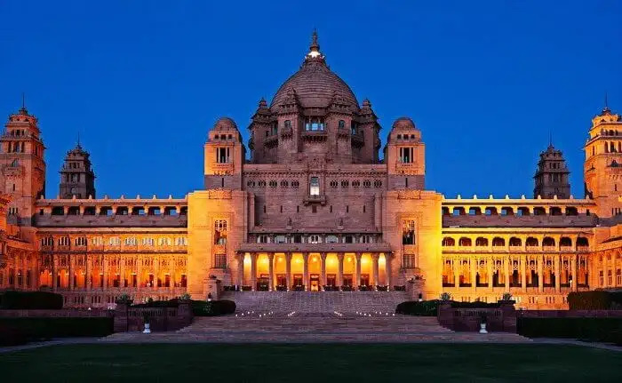

HISTORY
Considered as the original abode of Kshatriyas, Rajasthan has a history of about 5000 years and the mythological origin of this gigantic land is related to the famous myth of Ram, the seventh incarnation of Lord Vishnu. The history of Rajasthan can be classified into three parts owing to the different epochs- Ancient, Medieval and Modern. The ancient history of Rajasthan belongs to 1200 AD when Rajasthan was a part of different dynasties including the glorious Mauryan Empire in around (321-184 BC). The Dundhmer region was the first Aryan settlement and the first inhabitants of this area were the Bhil and the Mina. The earliest Rajput dynasty that emerged around 700 AD was the Gurjara Partiharas and since then Rajasthan was cited as Rajputana (the land of the Rajputs). During the eighth - twelfth century AD, the Rajput clan gained supremacy and the Rajputs were divided into 36 royal clans and 21 dynasties. The armed conflicts and the struggle for supremacy among the Parmars, Chalukyas, and Chauhans around 1000-1200 AD resulted in a lot of bloodshed.
In this medieval era around 1200 AD, the major regions of Rajasthan such as Nagaur, Ajmer and Ranthanbhor came under the Mughal hegemony headed by the Mughal ruler- Akbar. The most famous Rajput warriors who represented the vigor and valiance of the Rajput dynasty and whose tales of chivalry are still imprinted in the sands of Rajasthan were Rana Uday Singh, his son Rana Pratap, Bhappa Rawal, Rana Kumbha and Prithviraj Chauhan and others.
With the end of the Mughal regime in1707, the Marathas gained supremacy and captured Ajmer in1775. The Maratha ascendancy ended in the late 17th century with the British suzerainty in 1817-18. On 1st November, 1956 the Indian state Rajasthan came into existence after the amalgamation of the princely states.
Medieval Period, 1201 - 1707
Around 1200 AD a part of Rajasthan came under Muslim rulers. The principal centers of their powers were Nagaur and Ajmer. Ranthambore was also under their suzerainty. At the beginning of the 13th century AD, the most prominent and powerful state of Rajasthan was Mewar.
Modern Period, 1707 - 1947
Rajasthan had never been united politically until its domination by Mughal Emperor - Akbar. Akbar created a unified province of Rajasthan. Mughal power started to decline after 1707. The political disintegration of Rajasthan was caused by the dismemberment of the Mughal Empire. The Marathas penetrated Rajasthan upon the decline of the Mughal Empire. In 1755 they occupied Ajmer. The beginning of the 19th Century was marked by the onslaught of the Pindaris.